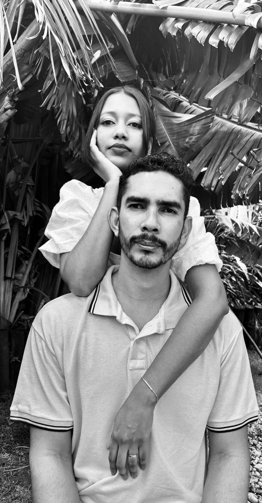
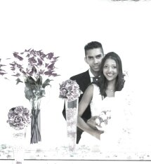
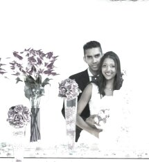

Bodas de Zinco — Daila & Junior
De 2015 até hoje — Celebrando uma década de amor
Dez anos. Um só caminho.
Se faz sentir, faz sentido...
O amor é paciente é bondoso. Não inveja, não se vangloria, não se orgulha. Não maltrata, não procura seus interesses, não se ira facilmente, não guarda rancor. Tudo sofre, tudo crê, tudo espera, tudo suporta.
1 Coríntios 13:4-7

Momentos marcantes
2015 — Casamento
O dia em que disseram sim.
Hoje completamos 10 anos de casamento, 10 anos de amor, parceria e conquistas. Mais de uma década ao seu lado me mostrou que o verdadeiro amor é feito de cuidado, repeito e companherismo. Obrigado por cada momento, por cada risada e até pelos desafios que nos tornaram mais fortes, nos ensinou a valorizar cada momento compartilhado.
 
